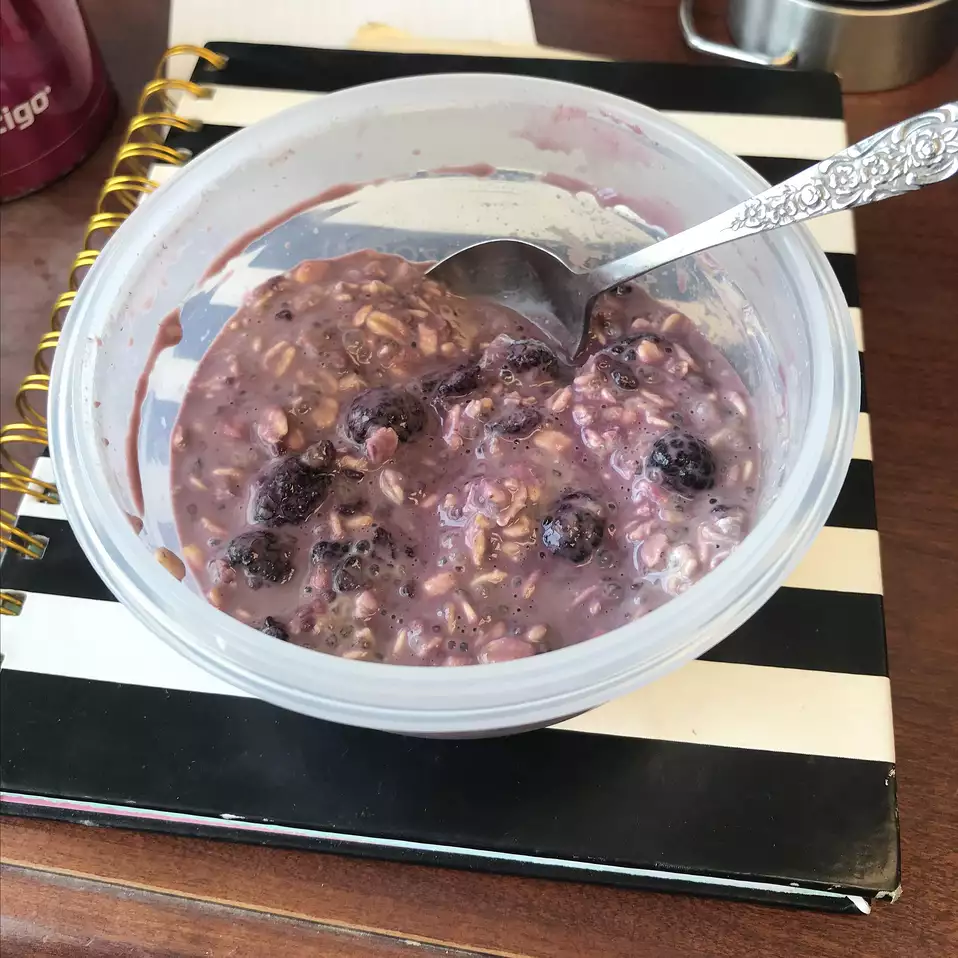

Overnight Light PB&J Oats

Delicious bowl of warm overnight oats
This grab and go breakfast is perfect for busy mornings!
Ingredients
- 1/2 cup almond milk
- 1/4 cup fresh raspberries
- 1/4 cup rolled oats
- 2 tablespoons powdered peanut butter (such as PB2®)
- 1 1/2 teaspoons chia seeds
- 1 teaspoon white sugar
Directions
- Mix almond milk, raspberries, rolled oats, powdered peanut butter, chia seeds, and sugar together in a container. Cover and refrigerate until oats are soft, 8 hours to overnight.